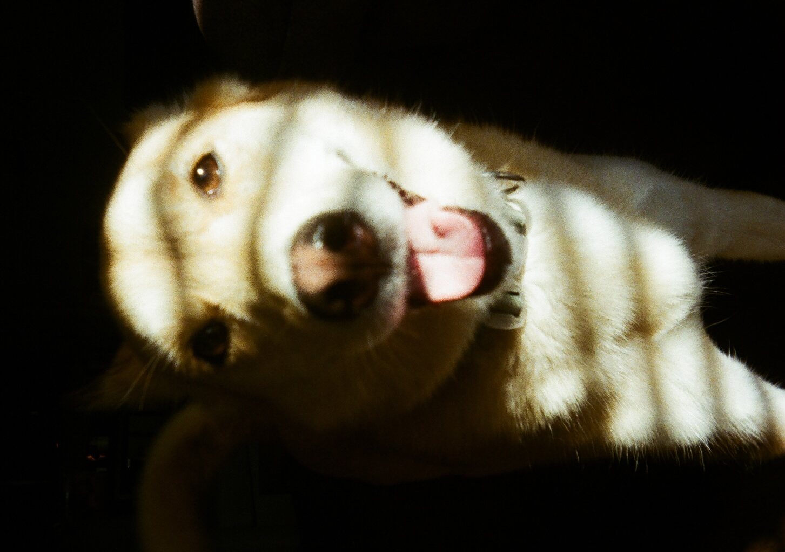

I am a Mechanical Engineer and U.S. Military Veteran with an Active Top Secret (TS + full scope poly) Clearance.
My passion lies in defense aerospace, specifically within propulsion controls and weapon systems development.
With industry experience at Boeing (747 Program) and Analog Devices, I have a strong foundation in manufacturing and systems integration.
My engineering philosophy is built on proving assumptions from first principles—bridging the gap between mechanical design and control theory using tools like Python, MATLAB, and Onshape.
I am creating this to give a better idea about who I am to aide in team building / selction. I also like to teach so sharing deep-dive educational material on engineering and non engineering topics is fun for me.
When I am not working on engineering, I am usually cooking for family, working on my 1999 Buick Regal, or hiking with Alpine.
How I Work
Communication
I am direct and structured, valuing clarity above all else.
My military background has trained me to communicate concisely with data-backed insights,
ensuring the team stays aligned on the objective.
Decision Making
I am methodical and data-driven. I utilize problem-solving methodologies
like Lean and Value Stream Mapping (VSM) to identify root causes
and implement tangible, long-term countermeasures.
Core Values
Integrity, Resilience, and Continuous Improvement.
I believe in "Mission First, People Always"—supporting the team
while relentlessly pursuing technical excellence.
What Energizes Me
I thrive on complex, multi-variable problems where I can contribute to
innovation. I am energized by collaborative environments where
mentorship flows both ways and technical rigor is celebrated.

Alpine Master of Adventure & Study Partner (2019–Present)
Video Lectures
My upcoming lecture series on topics that I fell in love with.
B.S. Mechanical Engineering. Its a tough ride but its fun.
Mechanical Engineering Intern
Analog Devices - Hillsboro, Or
Summer 2025
At Analog Devices, I was able to be on a team that got exposeure to various manufacturing
steps in wafer fabricaton. In all, I had was able to work with industry vaccum toolsets,
worked with and troubleshot lithography tooling, built and tested small scale robotics using
computer vision and kernel manipuation, built and tested Variable Freq Drives on Semiens products,
built and tested with a Universal Robots UR companion model.
During this time I was also able to work with operators that were going through a course to become operator maintainers.
The knowledge that they had about how very speficific equiptment worked was one thing, how they were able
articulate their thought prcess for esceltion/ judgment calls was another. They know how to balance the very
very expensive downtime and in demand need of engineering support time. Thats not something you get from a class
, its felt from experience.
Mech / Manufacturing Engineering Intern
Oregon Tool - Portland, Or
Summer + Fall 2024
At Oregon Tool I was able to use my CAD experiance to help the manufacturing team with 2
safety designs and my background in root cause to help with a Mixed Parts issue.
The first saftey design was for a pinch point that existed in a blind spot for the operators on an articulating
grinding machine.
The first version was one that would be great for 3D but absolute horror for sending off to Manufacturing.
The second and final was elegant, cheap, easy to manufacture and was able to fit a range
of motion that would show up as a new requrement with the deviation from 3D printing. The 2nd
saftey design was for a maintenence cart redesign. The carts were used for loading and onloading
die presses that would range from 200 to 600 lbs. The redesign would allow for a larger degree of control
over the lunricant that would come off the dies when transporting them around the shop floor.
Mixed parts jammed machines and cost time in the production line, it cost time with maintenence,
it reduced overall delivery time and caused many tonnes of wasted material since sorting was so expensive.
Going through a Root Cause analysis I was able to narrow down to a few of likely points where mixing would happen.
Of those points One would be mechanical in nature and the otheres would be procedural.
The mechanical issue would be in an auguer feeder for a heat treatment processes and it
financialy prohibited to spend resouces for a high temp camera system to inspect the flow.
The other two points would be addressed with a container redesign and a procedural change AKA more training.
As unclimactic as it sounds, the procedural change was the most effective, not by way of reduced parts,
which happened, but with how the entire inspection and implemantation took place. People want to be head and
with a cronic issue like mixed parts, its easy to get jaded. By involving the operators and maintenence team
in the solution we were able to get buy in and make the change stick.
Mech / Manufacturing Engineering Intern
Boeing - 747 - Renton, Wa
Summer + Fall 2023
At Boeing I was able to work on the 747 program as a manufacturing engineering intern.
My main project was to help with the implementation of a new torque tool for the horizontal stabilizer
installation process. This involved working with quality engineers to ensure that the new tool met all
necessary specifications and standards. I also collaborated with manufacturing teams to develop
training materials and procedures for using the new tool effectively.
Contact
I am currently open to opportunities in Defense & Propulsion.
I am open to assignments in the US, Australia, Ireland, and Europe.